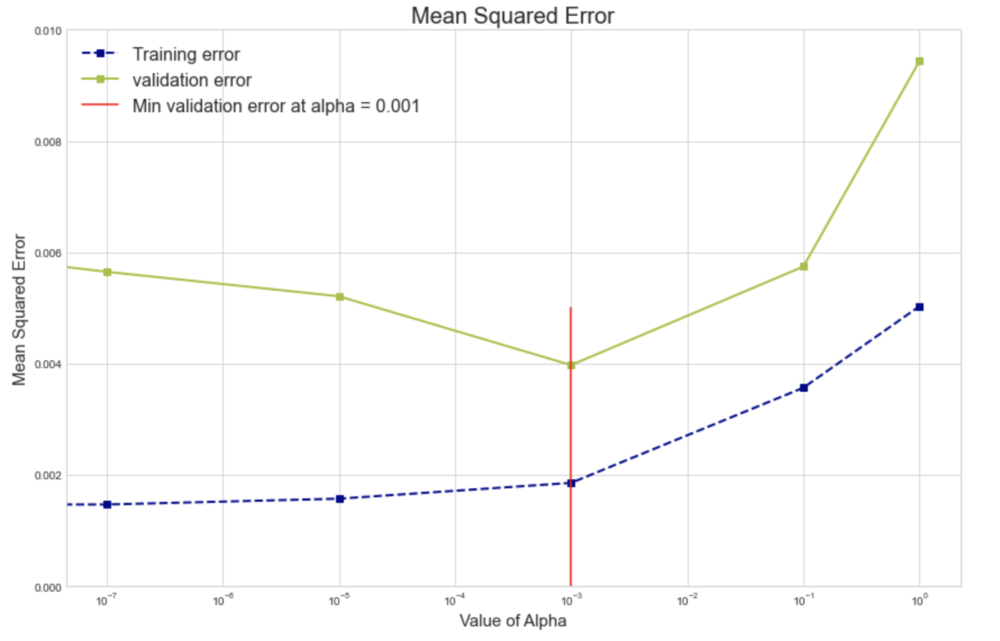

Key Word(s): Lasso, Ridge, Error, Bias, Variance, Regularization, Generalization
Title :¶
Exercise: Hyper-parameter Tuning for Ridge Regression
Description :¶
The goal of this exercise is to perform hyper-parameter tuning and produce a plot similar to the one below:

Data Description:¶
- The dataset has a total of 3 columns with names - x,y and f
- "$x$" represents the predictor variable
- "$y$" is the response variable
- "$f$" denotes the true values of the underlying function
Instructions:¶
- Read the dataset
polynomial50.csvas a dataframe. - Assign the predictor and response variables.
- Visualize the dataset by making plots using the predictor and response variables along with the true function.
- Split the data into train and validation sets using
random_state=42. - For each value of alpha from a given list:
- Estimate a Ridge regression on the training data with the alpha value.
- Calculate the MSE of training and validation data. Append to separate lists appropriately.
- Use the given plot_functions function to plot the value of parameters.
- Compute the best hyperparameter for this data based on the lowest MSE
- Make a plot of the MSE values for each value of hyper-parameter alpha from the list above. It should look similar to the one given above.
Hints:¶
sklearn.Ridge() Linear least squares with L2 regularization.
sklearn.train_test_split() Splits the data into random train and test subsets.
ax.plot() Plot y versus x as lines and/or markers.
sklearn.PolynomialFeatures() Generates a new feature matrix consisting of all polynomial combinations of the features with degree less than or equal to the specified degree.
sklearn.fit_transform() Fits transformer to X and y with optional parameters fit_params and returns a transformed version of X.
sklearn.Ridge() Linear least squares with L2 regularization.
sklearn.predict() Predict using the linear model.
mean_squared_error() Mean squared error regression loss.
Note: This exercise is auto-graded and you can try multiple attempts.
# Import necessary libraries
%matplotlib inline
import numpy as np
import pandas as pd
import seaborn as sns
import matplotlib.pyplot as plt
from sklearn.linear_model import Ridge, Lasso
from sklearn.metrics import mean_squared_error
from sklearn.model_selection import train_test_split
from sklearn.preprocessing import PolynomialFeatures
plt.style.use('seaborn-white')
# These are custom functions made to help you visualise your results
from helper import plot_functions
from helper import plot_coefficients
# Open the file 'polynomial50.csv' as a Pandas dataframe
df = pd.read_csv('polynomial50.csv')
# Take a quick look at the data
df.head()
# Assign the values of the 'x' column as the predictor
x = df[['x']].values
# Assign the values of the 'y' column as the response
y = df['y'].values
# Also assign the true value of the function (column 'f') to the variable f
f = df['f'].values
# Visualise the distribution of the x, y values & also the value of the true function f
fig, ax = plt.subplots()
# Plot x vs y values
ax.plot(___,___, '.', label = 'Observed values',markersize=10)
# Plot x vs true function value
ax.plot(___,___, 'k-', label = 'Function description')
# Helper code to annotate the plot
ax.legend(loc = 'best')
ax.set_xlabel('Predictor - $X$',fontsize=16)
ax.set_ylabel('Response - $Y$',fontsize=16)
ax.set_title('Predictor vs Response plot',fontsize=16)
plt.show();
# Split the data into train and validation sets with
# training size 80% and random_state = 42
x_train, x_val, y_train, y_val = train_test_split(x,y, train_size = 0.8,random_state=42)
### edTest(test_mse) ###
fig, rows = plt.subplots(6, 2, figsize=(16, 24))
# Select the degree for polynomial features
degree= ___
# List of hyper-parameter values
alphas = [0.0, 1e-7,1e-5, 1e-3, 0.1,1]
# Create two lists for training and validation error
training_error, validation_error = [],[]
# Compute the polynomial features train and validation sets
x_poly_train = PolynomialFeatures(___).fit_transform(___)
x_poly_val= PolynomialFeatures(___).fit_transform(___)
# Loop over all the alpha values
for i, alpha in enumerate(alphas):
# Code to get the plot grid
l, r = rows[i]
# Initialize a Ridge regression with the current alpha
ridge = Ridge(fit_intercept=False, alpha=___)
# Fit the model on the transformed training data
ridge.fit(___,___)
# Predict on the transformed training set
y_train_pred = ridge.predict(___)
# Predict on the transformed validation set
y_val_pred = ridge.predict(___)
# Compute the training and validation errors
mse_train = mean_squared_error(___, ___)
mse_val = mean_squared_error(___, ___)
# Add the error values to the appropriate list
training_error.append(___)
validation_error.append(___)
# Calling the helper functions plot_functions &
# plot_coefficients to visualise the plots
plot_functions(degree, ridge, l, df, alpha, x_val, y_val, x_train, y_train)
plot_coefficients(ridge, r, alpha)
sns.despine();
### edTest(test_hyper) ###
# Find the best value of hyper parameter, which
# gives the least error on the validdata
best_parameter = ___
# Print the best hyper parameter
print(f'The best hyper parameter value, alpha = {best_parameter}')
# Plot the errors as a function of increasing d value
# to visualise the training and validation errors
fig, ax = plt.subplots(figsize = (12,8))
# Plot the training errors for each alpha value
ax.plot(___,___,'s--', label = 'Training error',color = 'Darkblue',linewidth=2)
# Plot the validation errors for each alpha value
ax.plot(___,___,'s-', label = 'validation error',color ='#9FC131FF',linewidth=2 )
# Draw a vertical line at the best parameter
ax.axvline(___, 0, 0.5, color = 'r', label = f'Min validation error at alpha = {best_parameter}')
ax.set_xlabel('Value of Alpha',fontsize=15)
ax.set_ylabel('Mean Squared Error',fontsize=15)
ax.set_ylim([0,0.010])
ax.legend(loc = 'upper left',fontsize=16)
ax.set_title('Mean Squared Error',fontsize=20)
ax.set_xscale('log')
plt.tight_layout()
plt.show();